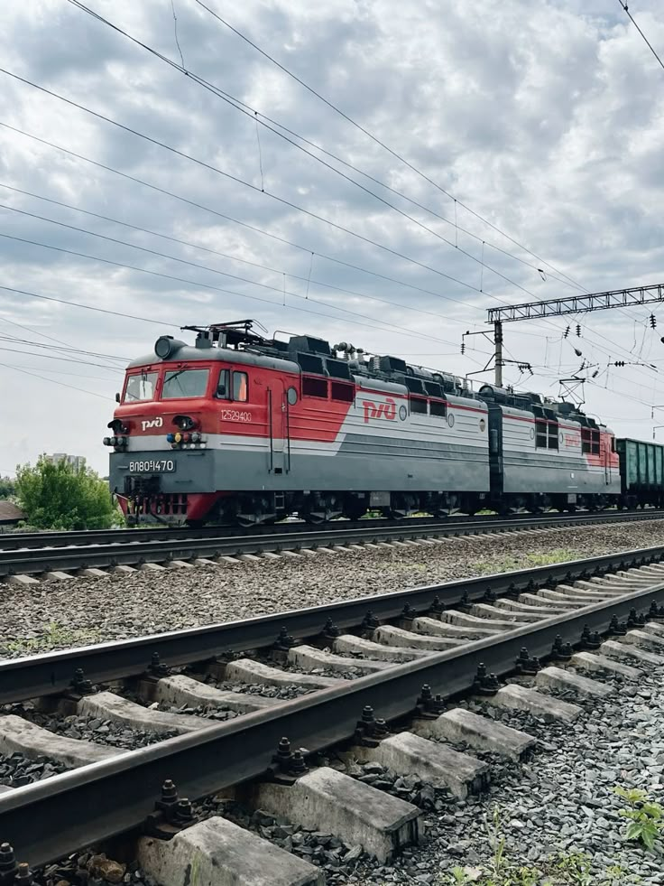
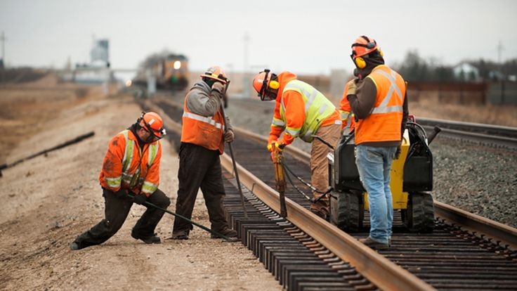
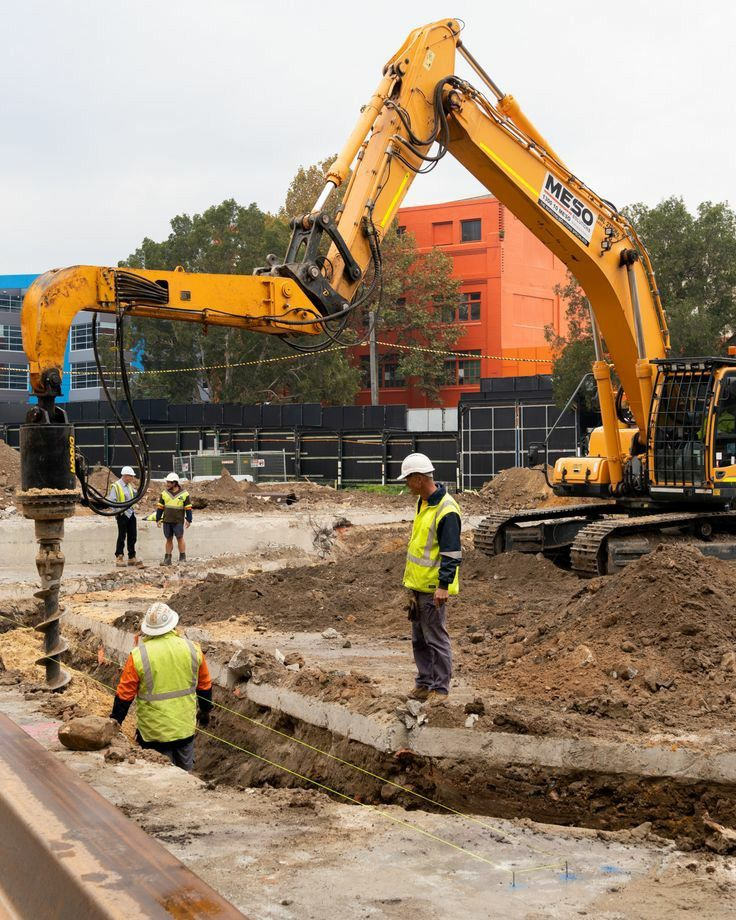
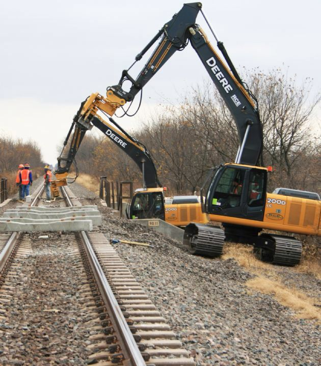
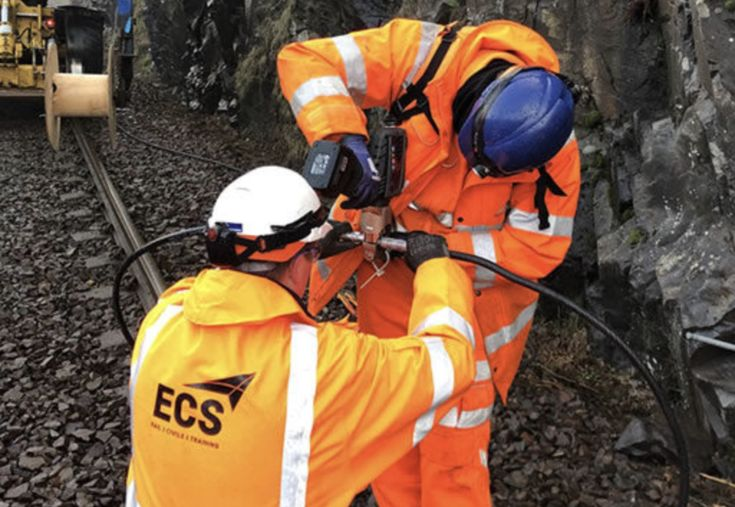
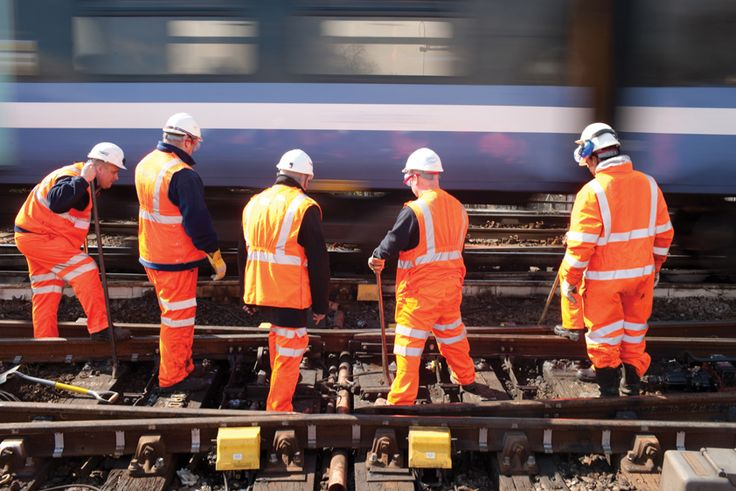

We offer meticulous cleaning and maintenance services for railway lines, contributing to operational safety and the preservation of railway infrastructure.
Bunker Logistics and Services SA is a trusted provider of meticulous cleaning and maintenance services for railway lines in Mozambique. With a steadfast commitment to operational safety and the preservation of railway infrastructure, we specialize in delivering comprehensive solutions to meet the unique needs of our clients in the transportation sector.

Track Cleaning
We understand the importance of maintaining clean
and debris-free railway tracks
to ensure smooth and safe operations.
Our track cleaning services involve the removal of debris,
vegetation, and other obstructions
that can impede the movement of trains
and compromise safety.
Using state-of-the-art equipment and techniques,
our team ensures that railway tracks are clear
and well-maintained at all times.
Vegetation Control
Overgrown vegetation can pose significant risks
to railway operations,
including signal visibility issues
and track obstructions.
Our vegetation control services involve the timely trimming
and removal of vegetation along railway corridors
to minimize the risk of accidents
and maintain optimal visibility
for train operators and signaling systems.

Ballast Maintenance
The ballast plays a critical role
in supporting railway tracks
and providing stability for trains.
Our ballast maintenance services include tamping,
leveling, and compacting the ballast
to ensure proper drainage and structural integrity.
By maintaining a stable and well-maintained ballast bed,
we help prevent track deformations
and ensure the longevity of railway infrastructure.
Infrastructure Inspections
Regular inspections are essential
for identifying potential issues
and preventing costly repairs.
Our team conducts thorough inspections
of railway infrastructure,
including track alignment,
switches, signals, and crossings,
to detect any signs of wear,
damage, or defects.
By identifying and addressing issues proactively,
we help our clients maintain safe
and reliable railway operations.




Cleaning and Maintenance of Railway lines
Safety is our top priority in all aspects of our operations. Our cleaning and maintenance services adhere to the highest safety standards and regulations to ensure the well-being of railway personnel, passengers, and the surrounding communities.
We are committed to environmental sustainability and responsible stewardship of natural resources. Our cleaning and maintenance practices are designed to minimize environmental impact while preserving the ecological integrity of railway corridors and surrounding areas.
Our goal is to optimize railway operations by ensuring that tracks are clean, well-maintained, and free from obstructions. By enhancing operational efficiency, we help our clients minimize downtime, improve on-time performance, and enhance overall service reliability.